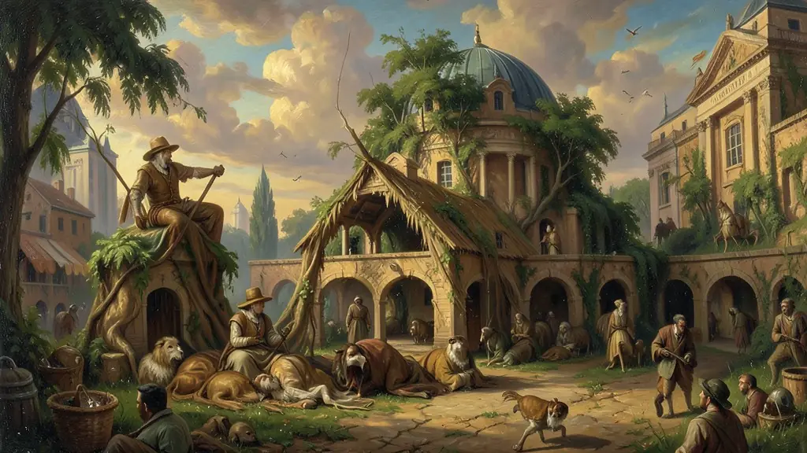
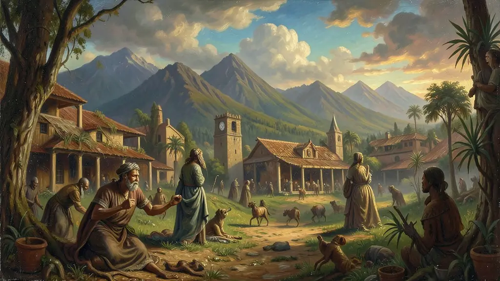
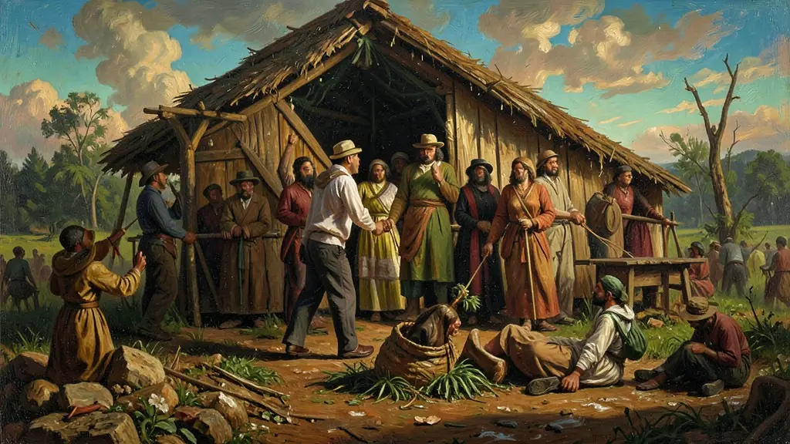

"O Brasil é um dos países com a maior concentração de terras do mundo. Estudar a questão agrária é entender como a posse da terra define a desigualdade social e política no nosso país desde o período colonial."
A Questão Agrária no Brasil: Histórias de Concentração e Luta
1530 - HojeCiências HumanasExperiente
Reforma AgráriaLei de Terras 1850MSTAgronegócioConflitos
A má distribuição de terras no Brasil tem raízes históricas profundas. Tudo começou com as Sesmarias, sistema de concessão de grandes latifúndios pela Coroa Portuguesa a quem tivesse recursos para produzir. Isso criou uma elite agrária que via a terra não como um direito social, mas como um título de nobreza e poder. Em 1850, um ano crucial, foi promulgada a Lei de Terras (Lei nº 601). Ela determinava que as terras devolutas só poderiam ser adquiridas por compra, e não mais por posse ou doação. O objetivo era claro: impedir que os escravizados (que seriam libertos futuramente) e os imigrantes europeus pobres tivessem acesso à terra, garantindo que continuassem sendo mão de obra barata para os grandes fazendeiros de café.
A tentativa mais séria de reforma veio no governo de João Goulart, com as Reformas de Base (1964), que foram o estopim para o golpe militar. Paradoxalmente, a Ditadura Militar criou o Estatuto da Terra (1964), um documento progressista que definia a Função Social da Propriedade (a terra deve produzir e gerar bem-estar), mas que nunca foi aplicado para realizar a reforma agrária de fato. Ao contrário, o regime incentivou a 'Modernização Dolorosa' do campo através do agronegócio exportador, o que expulsou milhões de pequenos agricultores para as favelas urbanas (êxodo rural).
Em resposta a esse cenário de exclusão, nos anos 80, surgiu o MST (Movimento dos Trabalhadores Rurais Sem Terra), que utiliza a ocupação de terras improdutivas como ferramenta política para forçar o Estado a cumprir a Constituição. O embate entre o agronegócio (altamente tecnológico e motor do PIB brasileiro) e os movimentos sociais de base familiar é o centro das tensões rurais atuais, envolvendo questões como o uso de agrotóxicos, o desmatamento da Amazônia e os assassinatos de lideranças camponesas como o massacre de Eldorado dos Carajás.
Capítulo 01
1. O Início de Tudo: Sesmarias e Latifúndios
As sesmarias eram faixas de terra gigantescas dadas a um 'Sesmeiro' para produzir. O problema é que muito dessas terras ficava abandonada, mas ainda era de propriedade de uma única família. Esse sistema criou o 'Mandonismo Local': o dono da terra era o dono da justiça e da política em sua região, base do que seria o Coronelismo no futuro.
O Brasil nasceu como um arquipélago de latifúndios sem povoamento real.

1. O Início de Tudo: Sesmarias e Latifúndios
Capítulo 02
2. Lei de Terras de 1850: O Excludente Colonial
Até 1850, você podia ocupar uma terra e dizer que era sua (posse). Depois da lei, só quem tinha dinheiro podia comprar. Isso foi feito exatamente quando o fim do tráfico negreiro estava próximo: os fazendeiros não queriam que o ex-escravizado fosse seu vizinho e competisse na produção; queriam que ele passasse da 'senzala' para o trabalho assalariado precário na mesma fazenda.
A Lei de Terras foi a maior ferramenta de exclusão social e racial do século XIX.

2. Lei de Terras de 1850: O Excludente Colonial
Capítulo 03
3. Estatuto da Terra e a Modernização Conservadora
Durante a Ditadura, o governo buscou modernizar o campo com tratores e venenos, mas sem mexer na estrutura da propriedade. O 'Estatuto da Terra' serviu apenas para acalmar os ânimos rurais após a perseguição às Ligas Camponesas. O resultado foi a concentração de renda no campo e a explosão urbana das cidades, que não estavam prontas para receber milhões de migrantes rurais.
A ditadura militar industrializou o campo mas concentrou ainda mais a terra.

3. Estatuto da Terra e a Modernização Conservadora
Capítulo 04
4. O MST e as Ocupações de Terras
O MST defende que 'terra para quem nela trabalha'. Suas ocupações visam terras que não cumprem sua função social (que são improdutivas ou têm crimes ambientais/trabalhistas). O movimento é o maior produtor de arroz orgânico da América Latina, mostrando que a reforma agrária não é apenas sobre justiça, mas sobre segurança alimentar para a população urbana.
Capítulo 05
5. Agronegócio vs. Agricultura Familiar
O agronegócio é o motor das exportações de soja, milho e carne. Já a agricultura familiar é responsável por 70% da comida que chega à mesa do brasileiro (feijão, mandioca, hortaliças). O conflito surge quando o agronegócio avança sobre terras indígenas ou áreas de preservação, gerando o chamado 'Arco do Desmatamento'. A solução da questão agrária passa pelo equilíbrio entre a riqueza externa e a justiça social interna.
O agronegócio gera dólares para o país; a agricultura familiar gera o alimento do povo.
Texto de apoio
A questão agrária no Brasil é caracterizada por uma das maiores concentrações fundiárias do mundo, cujas raízes remontam ao sistema de Sesmarias da era colonial. Segundo José de Souza Martins, a terra no Brasil foi historicamente tratada como um 'cativeiro', onde a posse servia mais para imobilizar a mão de obra do que para a produção democrática. A Lei de Terras de 1850 consolidou esse modelo ao transformar a terra em mercadoria acessível apenas por compra, justamente no momento em que a escravidão entrava em declínio.
O Estatuto da Terra, promulgado ironicamente no início da Ditadura Militar, definiu a 'Função Social da Propriedade', estabelecendo que a terra deve produzir e respeitar critérios ambientais e trabalhistas para ser legítima. No entanto, o incentivo estatal ao agronegócio exportador e à 'modernização conservadora' aprofundou as desigualdades rurais. Esse cenário deu origem a movimentos sociais de base, como as Ligas Camponesas e, posteriormente, o MST (Movimento dos Sem Terra), que colocaram a luta pela reforma agrária no centro do debate político brasileiro.
Para o Enem, a questão agrária deve ser analisada sob a ótica da desigualdade social e do impacto ambiental. O embate entre o agronegócio de alta produtividade e a agricultura familiar (responsável por 70% da alimentação interna) revela as contradições do desenvolvimento econômico nacional. A compreensão dessas tensões é fundamental para interpretar conflitos contemporâneos envolvendo terras indígenas, desmatamento e a segurança alimentar da população urbana.
Fonte: MARTINS, José de Souza. O Cativeiro da Terra. São Paulo: Contexto, 2013.
⚡
Arcade
Atividades interativas
?
Simulado
Questões para fixar
—
—
Módulo concluído
Questão A · Enem 2013 Oficial
A Lei de Terras de 1850 determinou que as terras devolutas no Brasil só poderiam ser adquiridas através da compra. Qual era o principal objetivo implícito dos legisladores da época?
Resposta correta: B
A lei foi uma resposta estratégica para privar as camadas populares do acesso à posse da terra.
Questão B · Simulado ENEM / MST
De acordo com o Estatuto da Terra (1964) e a Constituição de 1988, para que uma propriedade rural cumpra sua Função Social, ela deve preencher requisitos de:
Resposta correta: C
A Função Social da propriedade é um pilar constitucional que exige produtividade ética, ambiental e trabalhista.
Questão C · Autoral — referência ENEM
Qual foi o principal objetivo da Lei de Terras de 1850 no Brasil?
Resposta correta: C
Questão D · Autoral — referência ENEM
Qual foi o resultado paradoxal da Ditadura Militar em relação à reforma agrária?
Resposta correta: C
Questão E · Autoral — referência ENEM
Qual é o principal objetivo do Movimento dos Trabalhadores Rurais Sem Terra (MST)?
Toque para revelar a resposta. Repita até sair sem hesitar.
A Lei de Terras de 1850 determinou que as terras devolutas no Brasil só poderiam ser adquiridas através da compra. Qual era o principal objetivo implícito dos legisladores da época?
A lei foi uma resposta estratégica para privar as camadas populares do acesso à posse da terra.
De acordo com o Estatuto da Terra (1964) e a Constituição de 1988, para que uma propriedade rural cumpra sua Função Social, ela deve preencher requisitos de:
A Função Social da propriedade é um pilar constitucional que exige produtividade ética, ambiental e trabalhista.
Mitos e verdades
O senso comum está cheio de desinformação histórica. Separe os fatos.
"Verdade ou Mito: Sobre o tema, é correto afirmar que: A) Estimular a agricultura urbana no Rio de Janeiro e em São Paulo.."
Verdade
A lei foi uma resposta estratégica para privar as camadas populares do acesso à posse da terra.
"Verdade ou Mito: Sobre o tema, é historiograficamente aceito que: B) Impedir o acesso à propriedade por parte de imigrantes pobres e ex-escravizados, garantindo mão de obra para os latifúndios.."
Mito
Falso! A lei foi uma resposta estratégica para privar as camadas populares do acesso à posse da terra.
"Verdade ou Mito: Sobre o tema, é correto afirmar que: A) Apenas produtividade econômica máxima em qualquer condição.."
Verdade
A Função Social da propriedade é um pilar constitucional que exige produtividade ética, ambiental e trabalhista.
"Verdade ou Mito: Sobre o tema, é historiograficamente aceito que: B) Uso de armas por parte dos proprietários contra invasores.."
Mito
Falso! A Função Social da propriedade é um pilar constitucional que exige produtividade ética, ambiental e trabalhista.
Linha do tempo
Clique nos eventos na ordem cronológica correta.
2. Lei de Terras de 1850: O Excludente Colonial
3. Estatuto da Terra e a Modernização Conservadora
1. O Início de Tudo: Sesmarias e Latifúndios
?
?
?
Cronologia perfeita!
Associações
Encontre os pares conceito ↔ definição.
Redistribuição de terras para reduzir desigualdade rural
Boias-frias
Lei de Terras de 1850
Reforma Agrária
Estabeleceu que terra só se adquire por compra
Grilagem
Fraude documental para apropriação de terras alheias
Trabalhadores rurais contratados temporariamente
Grande propriedade de terra improdutiva no Brasil
MST
Latifúndio
Movimento dos Trabalhadores Rurais Sem Terra
Termo oculto
Dica: O conceito-chave central ou termo associado à aula de A Questão Agrária no Brasil: Histórias de Concentração e Luta.